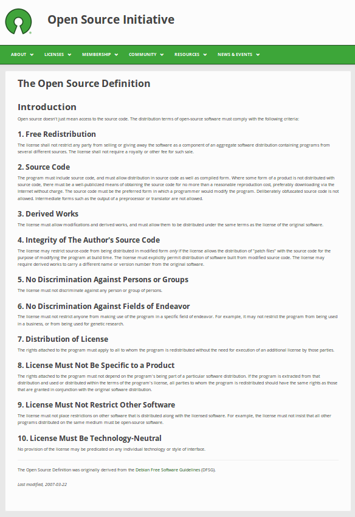
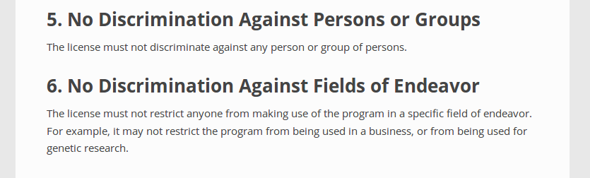

Free & Open Source Software Concepts
A brief introduction
D. Joe Anderson
University of Rochester October 2017
running heads:
FOSS Concepts Intro GIS XYZ
I am not a lawyer.
Rough outline
- Software freedom: What is it?
- Motivations vs legal restrictions
- Expanding rights: Licensing
- Example projects
In this talk I hope to give a quick summary of what we mean by software freedom, to provide background for the legal conditions that require us to take specific steps to exercise those rights; followed by a quick look at the legal tools to help protect those rights, and then to apply those to a relevant example or two.
Terminology note
People occasionally try to come up with different ways of doing or saying largely the same thing.

Terminology note
- free software
- open source
- free and open source software (FOSS)
- free, libre, and open source software (FLOSS)
- public software
Think free as in freedom rather than available at no (additional) cost.
These terms are used differently within the field to indicate differences in philosophy or approach that are too abstruse to get into for a general audience. Of course I have opinions about all of this and would love to talk about it, but to do so would keep us from the fundamentals. I'll generally use "free software" or "FOSS but usually the other terms would do. Newcomer: copyfree
What is "software freedom"?
Very briefly, for now. Heard of the 3Rs?. cf Four freedoms, 5Rs of open content
The 4 R's
What is "software freedom"?
The 4 R's
- Run
- Read
- Revise
- Redistribute
What is "software freedom"?
Run
Anyone can run it for any purpose. Contrast with, eg, Apple software on Apple hardware. Apple HW and OS have changed a lot over the years, to run in emulation still legally requires a license. Video game console emulation.
What is "software freedom"?
One of many ways of trying to explicitly describe freedoms. For now, want to focus on a couple of points here.
What is "software freedom"?
For now, want to focus on a couple of points here behind "freedom to run". A lot packed into that 3 letter word.
cf DFSG
What is "software freedom"?
Run
Read
By read we mean the human-readable form of software, that previous had been written by a human doing a thing we tend to refer to as programming or more lately as developing. We call that human readable stuff "source code" hence "open source". Study, learn, understand, criticize.
This is where academic values really come into play. Beware some licenses, what I call "academicware", that let you use it as a student or faculty member, but not once you get a job, or let you work with industry or government collaborators. Personal use only, etc.
What is "software freedom"?
Run
Read
Revise
Correct, debug, improve, repurpose. Do you understand it well enough to change it? Can you keep using it on different OSes or hardware? Fighting bitrot.
What is "software freedom"?
Run
Read
Revise
Redistribute
Share. Verbatim or changed. Upstream or downstream. Beware "must submit upstream" terms. Free and easy, cf code escrow.
What is "software freedom"?
- Run
- Read
- Revise
- Redistribute
Or, to put it most briefly, the essential freedom for FOSS is the:
Freedom to *fork*
Software freedom:
Practical constraints
Rights and restrictions
Rights and restrictions
Rights without restrictions
- public domain
eg GRASS
Rights for some, restrictions for others
- trade secret
- patent
- copyright
- trademark
... which require licenses (mostly).

Rights and restrictions
The problem with proprietary EULAs
Great big documents to allow you to do very little.
Red tape around a black box
They prevent or make difficult:
- peer review
- scrutiny
- accountability
- reproducibility
- incremental progress
One thing they tend to get right
- attribution
Rights and restrictions
- Who?
- What?
- Why?
- When?
- How?
Who can get the rights, who gets limited by them
What is covered by what restrictions
Why create restrictions
Where do these restrictions apply
When and how does it expire
How and when does something become covered
Excerpt from Constitution
Patent and Copyright Clause
U.S. Constitution
[The Congress shall have power] "To promote the progress of science and useful arts, by securing for limited times to authors and inventors the exclusive right to their respective writings and discoveries."
Article I Section 8. Clause 8
This is US federal jurisdiction. Used to be more localized, with state and even local law in the US weighing in. Now internationalized and harmonized through for instance the Berne Convention (US 1989), though still with differences from country-to-country.
Patent and Copyright Clause
Summarized
- Who? authors & inventors
- What? writings & discoveries
- Why? progress
- When? limited time
- How? exclusive rights
Patent and Copyright Clause
- applies at the federal level
- current law mostly supplants state & local law
- current law implements international agreements
- differs in subtle ways from international counterparts
- USPTO
- copyright.gov
- Library of Congress
Rights & restrictions
Focus on copyright
- trade secret
- patent
- copyright
- trademark
- public domain
copyright: for authors applies to creative expression (very broadly: literature, art. cf djb vs us) not for facts or automatic work (cf phone books, databases) arises automatically (per Berne vide supra) on creation can be registered: damages vs injunctive relief life of author plus 70 (120 from creation, 95 from pub. Up from 14x2) not for US govt (cf Crown Copyright and OSM) limited by fair use (do ToS override fair use?)
trade secret, in principle for ever, cumbersome, rev eng, Coke formula
patent, 20 years, first to file, prior art, novel, practical, must apply
trademark, logos and brand names, start by using, protects consumers from "confusion", must defend from becoming generic. Xerox. Kleenex. Hoover.
public domain, US federal govt (but not UK!) works not copyrightable, when copyright, patent expires, trademark becomes generic.
Slide highlighting just copyright.
but where do these come from?
Freedom to fork: Reprise
What do we want?
- Run
- Read
- Revise
- Redistribute
How do we get it?
By using the idea of a license expansively, to protect rights. In our current legal climate, we can tell a piece of software has been liberated by its authors when it has a license that allows us effectively to run, read, revise, and redistribute the source code.
Free software licenses
For software
- Permissive, non-reciprocal
- MIT expat or X11
- BSD 2-clause or 3-clause
- Apache
- WTFPL
- Copyleft
- varieties of the GPL
- Oracle (via Sun) CDDL
Free content licenses
- GFDL
- Creative Commons
- BY attribution
- [SA] share-alike (copyleft)
- (NC) non-commercial (unfree)
- (ND) no-derivatives (unfree)
Examples
Classic FOSS & Free Culture
- Linux
- Firefox
- Wikipedia
FOSS for GIS examples
I want to focus on their licensing.
QGIS
- cc-by-sa 3 for website
- Wikipedia just says GPL
- download, sources says GPL but not what version
- get involved --> development --> GIT Access --> Accessing the repository
- v2 and above https://github.com/qgis/QGIS
very nice, there's a repo for the website, docs organized well, onboarding
Open Street Map
Y-jXWrfBDKs youtube
Compare and contrast USGS, NASA, and NOAA data to UK Crown Copyright
> OpenStreetMap® is open data, licensed under the Open Data Commons Open Database License (ODbL) by the OpenStreetMap Foundation (OSMF)